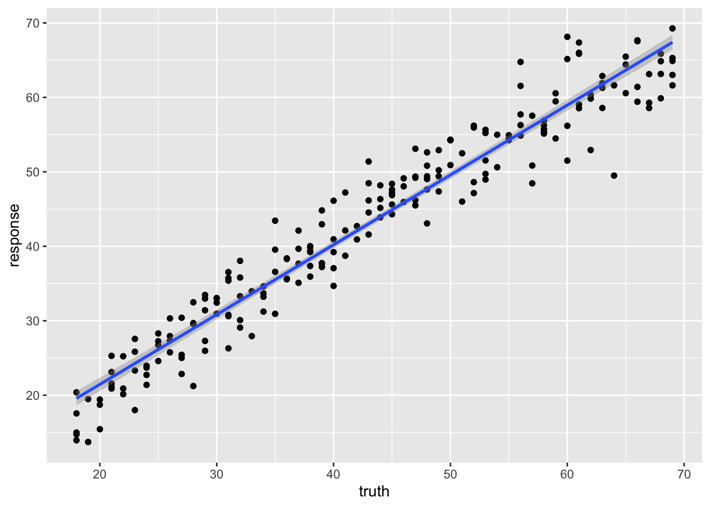
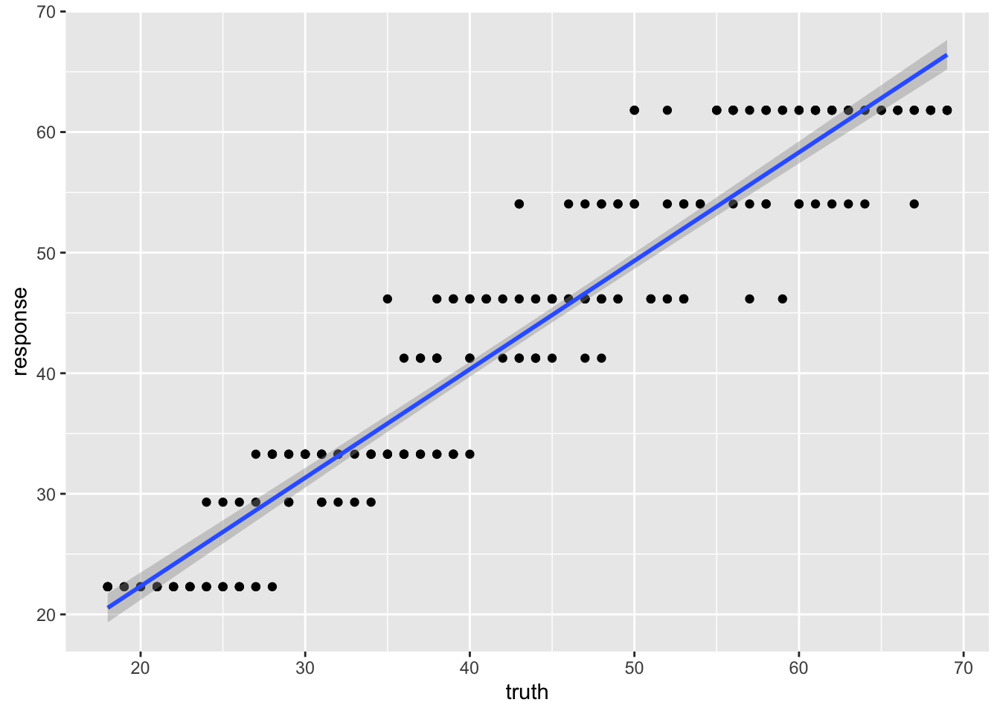
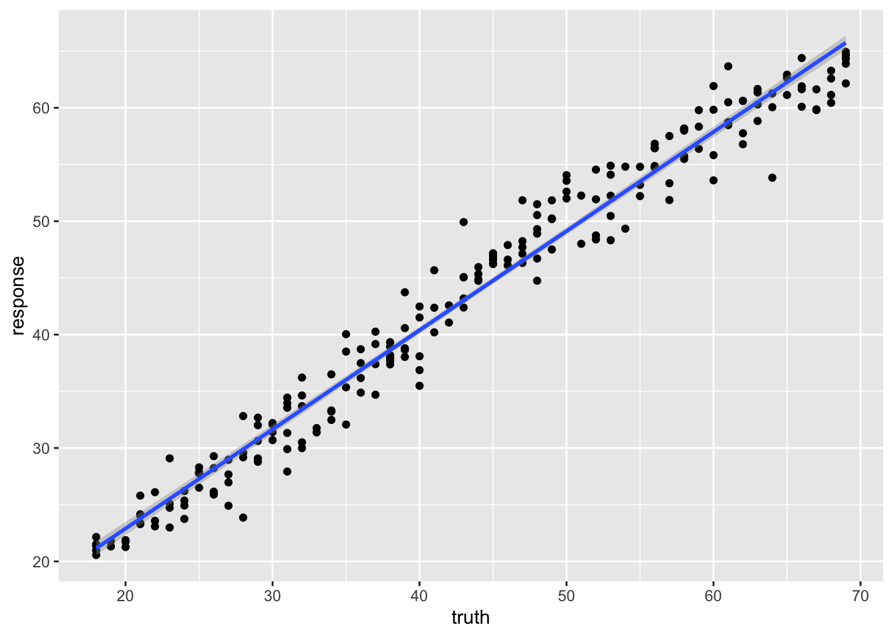

17 Machine Learning 2
17.1 Practical Machine Learning with R and mlr3
The mlr3 R package is a modern, object-oriented machine learning framework in R that builds on the success of its predecessor, the mlr package. It provides a flexible and extensible platform for handling common machine learning tasks such as data preprocessing, model training, hyperparameter tuning, and model evaluation Figure 17.1. The package is designed to simplify the process of creating and deploying complex machine learning pipelines.
17.1.1 Key features of mlr3
- Task abstraction
- mlr3 encapsulates different types of learning problems like classification, regression, and survival analysis into “Task” objects, making it easier to handle various learning scenarios.
- Modular design
- The package follows a modular design, allowing users to quickly swap out different components such as learners (algorithms), measures (performance metrics), and resampling strategies.
- Extensibility
- Users can extend the functionality of mlr3 by adding custom components like learners, measures, and preprocessing steps via the R6 object-oriented system.
- Preprocessing
- mlr3 provides a flexible way to preprocess data using “PipeOps” (pipeline operations), allowing users to create reusable preprocessing pipelines.
- Tuning and model selection
- mlr3 supports hyperparameter tuning and model selection using various search strategies like grid search, random search, and Bayesian optimization.
- Parallelization
- The package allows for parallelization of model training and evaluation, making it suitable for large-scale machine learning tasks.
- Benchmarking
- mlr3 facilitates benchmarking of multiple algorithms on multiple tasks, simplifying the process of comparing and selecting the best models.
You can find more information, including tutorials and examples, on the official mlr3 GitHub repository1 and the mlr3 book2.
17.2 The mlr3 workflow
The mlr3 package is designed to simplify the process of creating and deploying complex machine learning pipelines. The package follows a modular design, which means that users can quickly swap out different components such as learners (algorithms), measures (performance metrics), and resampling strategies. The package also supports parallelization of model training and evaluation, making it suitable for large-scale machine learning tasks.
The mlr3 workflow consists of the following steps:
- Load data
- Create a task to define the learning problem.
- Split data into training and test sets.
- Choose a learner object to specify the learning algorithm.
- Train the model on the training set.
- Predict the target variable for the test set.
- Assess the performance of the model.
- Interpret the model.
The following sections describe each of these steps in detail.
17.2.1 Tasks
Tasks are objects that contain the (usually tabular) data and additional metadata to define a machine learning problem. The meta-data is, for example, the name of the target variable for supervised machine learning problems, or the type of the dataset (e.g. a spatial or survival task). This information is used by specific operations that can be performed on a task.
Tasks are objects that contain the (usually tabular) data and additional meta-data to define a machine learning problem. The meta-data is, for example, the name of the target variable for supervised machine learning problems, or the type of the dataset (e.g. a spatial or survival task). This information is used by specific operations that can be performed on a task.
There are a number of Task Types that are supported by mlr3. To create a task from a data.frame(), data.table() or Matrix(), you first need to select the right task type:
Classification Task: The target is a label (stored as
characterorfactor) with only relatively few distinct values →TaskClassif.Regression Task: The target is a numeric quantity (stored as
integerornumeric) →TaskRegr.Survival Task: The target is the (right-censored) time to an event. More censoring types are currently in development →
mlr3proba::TaskSurvin add-on package mlr3proba.Density Task: An unsupervised task to estimate the density →
mlr3proba::TaskDensin add-on package mlr3proba.Cluster Task: An unsupervised task type; there is no target and the aim is to identify similar groups within the feature space →
mlr3cluster::TaskClustin add-on package mlr3cluster.Spatial Task: Observations in the task have spatio-temporal information (e.g. coordinates) →
mlr3spatiotempcv::TaskRegrSTormlr3spatiotempcv::TaskClassifSTin add-on package mlr3spatiotempcv.Ordinal Regression Task: The target is ordinal →
TaskOrdinalin add-on package mlr3ordinal (still in development).
17.2.2 Learners
Objects of class Learner provide a unified interface to many popular machine learning algorithms in R. They consist of methods to train and predict a model for a Task and provide meta-information about the learners, such as the hyperparameters (which control the behavior of the learner) you can set.
The base class of each learner is Learner, specialized for regression as LearnerRegr and for classification as LearnerClassif. Other types of learners, provided by extension packages, also inherit from the Learner base class, e.g. mlr3proba::LearnerSurv or mlr3cluster::LearnerClust.
All Learners work in a two-stage procedure:
-
Training stage: The training data (features and target) is passed to the Learner’s
$train()function which trains and stores a model, i.e. the relationship of the target and features. -
Predict stage: The new data, usually a different slice of the original data than used for training, is passed to the
$predict()method of the Learner. The model trained in the first step is used to predict the missing target, e.g. labels for classification problems or the numerical value for regression problems.
There are a number of predefined learners. The mlr3 package ships with the following set of classification and regression learners. We deliberately keep this small to avoid unnecessary dependencies:
-
classif.featureless: Simple baseline classification learner. The default is to always predict the label that is most frequent in the training set. While this is not very useful by itself, it can be used as a “fallback learner” to make predictions in case another, more sophisticated, learner failed for some reason. -
regr.featureless: Simple baseline regression learner. The default is to always predict the mean of the target in training set. Similar tomlr_learners_classif.featureless, it makes for a good “fallback learner” -
classif.rpart: Single classification tree from package rpart. -
regr.rpart: Single regression tree from package rpart.
This set of baseline learners is usually insufficient for a real data analysis. Thus, we have cherry-picked implementations of the most popular machine learning method and collected them in the mlr3learners package:
- Linear (
regr.lm) and logistic (classif.log_reg) regression - Penalized Generalized Linear Models (
regr.glmnet,classif.glmnet), possibly with built-in optimization of the penalization parameter (regr.cv_glmnet,classif.cv_glmnet) - (Kernelized) k-Nearest Neighbors regression (
regr.kknn) and classification (classif.kknn). - Kriging / Gaussian Process Regression (
regr.km) - Linear (
classif.lda) and Quadratic (classif.qda) Discriminant Analysis - Naive Bayes Classification (
classif.naive_bayes) - Support-Vector machines (
regr.svm,classif.svm) - Gradient Boosting (
regr.xgboost,classif.xgboost) - Random Forests for regression and classification (
regr.ranger,classif.ranger)
More machine learning methods and alternative implementations are collected in the mlr3extralearners repository.
17.2.3 mlr3 Workflow
17.3 Setup
17.4 Example 1: cancer types
In this exercise, we will be classifying cancer types based on gene expression data. The data we are going to access are from Brouwer-Visser et al. (2018).
17.4.1 Data Preparation
Use the [GEOquery] package to fetch data about [GSE103512].
The first step, a detail, is to convert from the older Bioconductor data structure (GEOquery was written in 2007), the ExpressionSet, to the newer SummarizedExperiment.
library(SummarizedExperiment)
se = as(gse, "SummarizedExperiment")Examine two variables of interest, cancer type and tumor/normal status.
normal.ch1
cancer.type.ch1 no yes
BC 65 10
CRC 57 12
NSCLC 60 9
PCA 60 7Before embarking on a machine learning analysis, we need to make sure that we understand the data. Things like missing values, outliers, and other problems can cause problems for machine learning algorithms.
In R, plotting, summaries, and other exploratory data analysis tools are available. PCA analysis, clustering, and other methods can also be used to understand the data. It is worth spending time on this step, as it can save time later.
17.4.2 Feature selection and data cleaning
While we could use all genes in the analysis, we will select the most informative genes using the variance of gene expression across samples. Other methods for feature selection are available, including those based on correlation with the outcome variable.
Feature selection should be done on the training data only, not the test data to avoid overfitting.
Remember that the apply function applies a function to each row or column of a matrix. Here, we apply the sd function to each row of the expression matrix to get a vector of stan
To make the data easier to work with, we will use the opportunity to use one of the rowData columns as the rownames of the data frame. The make.names function is used to make sure that the rownames are valid R variable names and unique.
## convert to matrix for later use
dat = assay(se_small, 'exprs')
rownames(dat) = make.names(rowData(se_small)$Gene.Symbol)We also need to transpose the data so that the rows are the samples and the columns are the features in order to use the data with mlr3.
feat_dat = t(dat)
tumor = data.frame(tumor_type = colData(se_small)$cancer.type.ch1, feat_dat)This is another good time to check the data. Make sure that the data is in the format that you expect. Check the dimensions, the column names, and the data types.
17.4.3 Creating the “task”
The first step in using mlr3 is to create a task. A task is a data set with a target variable. In this case, the target variable is the cancer type. The mlr3 package provides a function to convert a data frame into a task. These tasks can be used with any machine learning algorithm in mlr3.
tumor$tumor_type = as.factor(tumor$tumor_type)
task = as_task_classif(tumor,target='tumor_type')Here, we randomly divide the data into 2/3 training data and 1/3 test data.
Training and testing on the same data is a common mistake. We want to test the model on data that it has not seen before. This is the only way to know if the model is overfitting.
17.4.4 K-nearest-neighbor
The first model we will use is the k-nearest-neighbor model. This model is based on the idea that similar samples have similar outcomes. The number of neighbors to use is a parameter that can be tuned. We’ll use the default value of 7, but you can try other values to see how they affect the results. In fact, mlr3 provides the ability to tune parameters automatically, but we won’t cover that here.
17.4.4.1 Create the learner
In mlr3, the machine learning algorithms are called learners. To create a learner, we use the lrn function. The lrn function takes the name of the learner as an argument. The lrn function also takes other arguments that are specific to the learner. In this case, we will use the default values for the arguments.
learner = lrn("classif.kknn")You can get a list of all the learners available in mlr3 by using the lrn() function without any arguments.
lrn()<DictionaryLearner> with 49 stored values
Keys: classif.cv_glmnet, classif.debug, classif.featureless,
classif.glmnet, classif.kknn, classif.lda, classif.log_reg,
classif.multinom, classif.naive_bayes, classif.nnet, classif.qda,
classif.ranger, classif.rpart, classif.svm, classif.xgboost,
clust.agnes, clust.ap, clust.cmeans, clust.cobweb, clust.dbscan,
clust.dbscan_fpc, clust.diana, clust.em, clust.fanny,
clust.featureless, clust.ff, clust.hclust, clust.hdbscan,
clust.kkmeans, clust.kmeans, clust.MBatchKMeans, clust.mclust,
clust.meanshift, clust.optics, clust.pam, clust.SimpleKMeans,
clust.xmeans, regr.cv_glmnet, regr.debug, regr.featureless,
regr.glmnet, regr.kknn, regr.km, regr.lm, regr.nnet, regr.ranger,
regr.rpart, regr.svm, regr.xgboost17.4.4.2 Train
To train the model, we use the train function. The train function takes the task and the row ids of the training data as arguments.
learner$train(task, row_ids = train_set)Here, we can look at the trained model:
# output is large, so do this on your own
learner$model17.4.4.3 Predict
Lets use our trained model works to predict the classes of the training data. Of course, we already know the classes of the training data, but this is a good way to check that the model is working as expected. It also gives us a measure of performance on the training data that we can compare to the test data to look for overfitting.
pred_train = learner$predict(task, row_ids=train_set)And check on the test data:
pred_test = learner$predict(task, row_ids=test_set)17.4.4.4 Assess
In this section, we can look at the accuracy and performance of our model on the training data and the test data. We can also look at the confusion matrix to see which classes are being confused with each other.
pred_train$confusion truth
response BC CRC NSCLC PCA
BC 42 0 0 0
CRC 0 40 0 0
NSCLC 1 0 44 0
PCA 0 0 0 35This is a multi-class confusion matrix. The rows are the true classes and the columns are the predicted classes. The diagonal shows the number of samples that were correctly classified. The off-diagonal elements show the number of samples that were misclassified.
We can also look at the accuracy of the model on the training data and the test data. The accuracy is the number of correctly classified samples divided by the total number of samples.
pred_test$confusion truth
response BC CRC NSCLC PCA
BC 22 0 0 0
CRC 0 17 1 0
NSCLC 0 0 15 0
PCA 0 0 0 25pred_test$score(measures)classif.acc
0.9875 Compare the accuracy on the training data to the accuracy on the test data. Do you see any evidence of overfitting?
17.4.5 Classification tree
We are going to use a classification tree to classify the data. A classification tree is a series of yes/no questions that are used to classify the data. The questions are based on the features in the data. The classification tree is built by finding the feature that best separates the data into the different classes. Then, the data is split based on the value of that feature. The process is repeated until the data is completely separated into the different classes.
17.4.5.1 Train
# in this case, we want to keep the model
# so we can look at it later
learner = lrn("classif.rpart", keep_model = TRUE)learner$train(task, row_ids = train_set)We can take a look at the model.
learner$modeln= 162
node), split, n, loss, yval, (yprob)
* denotes terminal node
1) root 162 118 NSCLC (0.26543210 0.24691358 0.27160494 0.21604938)
2) CDHR5>=5.101625 40 0 CRC (0.00000000 1.00000000 0.00000000 0.00000000) *
3) CDHR5< 5.101625 122 78 NSCLC (0.35245902 0.00000000 0.36065574 0.28688525)
6) ACPP< 6.088431 87 43 NSCLC (0.49425287 0.00000000 0.50574713 0.00000000)
12) GATA3>=4.697803 41 1 BC (0.97560976 0.00000000 0.02439024 0.00000000) *
13) GATA3< 4.697803 46 3 NSCLC (0.06521739 0.00000000 0.93478261 0.00000000) *
7) ACPP>=6.088431 35 0 PCA (0.00000000 0.00000000 0.00000000 1.00000000) *Decision trees are easy to visualize if they are small. Here, we can see that the tree is very simple, with only two splits.
#autoplot(learner)17.4.5.2 Predict
Now that we have trained the model on the training data, we can use it to predict the classes of the training data and the test data. The $predict method takes a task and produces a prediction based on the trained model, in this case, called learner.
pred_train = learner$predict(task, row_ids=train_set)Remember that we split the data into training and test sets. We can use the trained model to predict the classes of the test data. Since the test data was not used to train the model, it is not “cheating” like what we just did where we did the prediction on the training data.
pred_test = learner$predict(task, row_ids=test_set)17.4.5.3 Assess
For classification tasks, we often look at a confusion matrix of the truth vs the predicted classes for the samples.
Assessing the performance of a model should always be reported from assessment on an independent test set.
pred_train$confusion truth
response BC CRC NSCLC PCA
BC 40 0 1 0
CRC 0 40 0 0
NSCLC 3 0 43 0
PCA 0 0 0 35- What does this confusion matrix tell you?
We can also ask for several “measures” of the performance of the model. Here, we ask for the accuracy of the model. To get a complete list of measures, use msr().
- How does the accuracy compare to the confusion matrix?
- How does this accuracy compare to the accuracy of the k-nearest-neighbor model?
- How about the decision tree model?
pred_test$confusion truth
response BC CRC NSCLC PCA
BC 20 0 1 0
CRC 0 17 3 0
NSCLC 2 0 12 0
PCA 0 0 0 25pred_test$score(measures)classif.acc
0.925 - What does the confusion matrix in the test set tell you?
- How do the assessments of the test and training sets differ?
When the assessment of the test set is worse than the evaluation of the training set, the model may be overfit. How to address overfitting varies by model type, but it is a sign that you should pay attention to model selection and parameters.
17.4.6 RandomForest
learner = lrn("classif.ranger", importance = "impurity")17.4.6.1 Train
learner$train(task, row_ids = train_set)Again, you can look at the model that was trained.
learner$modelRanger result
Call:
ranger::ranger(dependent.variable.name = task$target_names, data = task$data(), probability = self$predict_type == "prob", case.weights = task$weights$weight, num.threads = 1L, importance = "impurity")
Type: Classification
Number of trees: 500
Sample size: 162
Number of independent variables: 192
Mtry: 13
Target node size: 1
Variable importance mode: impurity
Splitrule: gini
OOB prediction error: 0.62 % For more details, the mlr3 random forest approach is based ont he ranger package. You can look at the ranger documentation.
- What is the OOB error in the output?
Random forests are a collection of decision trees. Since predictors enter the trees in a random order, the trees are different from each other. The random forest procedure gives us a measure of the “importance” of each variable.
head(learner$importance(), 15) CDHR5 TRPS1.1 FABP1 EPS8L3 KRT20 EFHD1 LGALS4 TRPS1
4.791870 3.918063 3.692649 3.651422 3.340382 3.314491 2.952969 2.926175
SFTPB SFTPB.1 GATA3 GATA3.1 TMPRSS2 MUC12 POF1B
2.805811 2.681004 2.344603 2.271845 2.248734 2.207347 1.806906 More “important” variables are those that are more often used in the trees. Are the most important variables the same as the ones that were important in the decision tree?
If you are interested, look up a few of the important variables in the model to see if they make biological sense.
17.4.6.2 Predict
Again, we can use the trained model to predict the classes of the training data and the test data.
pred_train = learner$predict(task, row_ids=train_set)pred_test = learner$predict(task, row_ids=test_set)17.4.6.3 Assess
pred_train$confusion truth
response BC CRC NSCLC PCA
BC 43 0 0 0
CRC 0 40 0 0
NSCLC 0 0 44 0
PCA 0 0 0 35pred_test$confusion truth
response BC CRC NSCLC PCA
BC 22 0 0 0
CRC 0 17 0 0
NSCLC 0 0 16 0
PCA 0 0 0 25pred_test$score(measures)classif.acc
1 17.5 Exercise: Predicting age from DNA methylation
We will be building a regression model for chronological age prediction, based on DNA methylation. This is based on the work of Jana Naue et al. 2017, in which biomarkers are examined to predict the chronological age of humans by analyzing the DNA methylation patterns. Different machine learning algorithms are used in this study to make an age prediction.
It has been recognized that within each individual, the level of DNA methylation changes with age. This knowledge is used to select useful biomarkers from DNA methylation datasets. The CpG sites with the highest correlation to age are selected as the biomarkers (and therefore features for building a regression model). In this tutorial, specific biomarkers are analyzed by machine learning algorithms to create an age prediction model.
The data are taken from this tutorial.
library(data.table)
meth_age = rbind(
fread('https://zenodo.org/record/2545213/files/test_rows_labels.csv'),
fread('https://zenodo.org/record/2545213/files/train_rows.csv')
)Let’s take a quick look at the data.
head(meth_age) RPA2_3 ZYG11A_4 F5_2 HOXC4_1 NKIRAS2_2 MEIS1_1 SAMD10_2 GRM2_9 TRIM59_5
<num> <num> <num> <num> <num> <num> <num> <num> <num>
1: 65.96 18.08 41.57 55.46 30.69 63.42 40.86 68.88 44.32
2: 66.83 20.27 40.55 49.67 29.53 30.47 37.73 53.30 50.09
3: 50.30 11.74 40.17 33.85 23.39 58.83 38.84 35.08 35.90
4: 65.54 15.56 33.56 36.79 20.23 56.39 41.75 50.37 41.46
5: 59.01 14.38 41.95 30.30 24.99 54.40 37.38 30.35 31.28
6: 81.30 14.68 35.91 50.20 26.57 32.37 32.30 55.19 42.21
LDB2_3 ELOVL2_6 DDO_1 KLF14_2 Age
<num> <num> <num> <num> <int>
1: 56.17 62.29 40.99 2.30 40
2: 58.40 61.10 49.73 1.07 44
3: 58.81 50.38 63.03 0.95 28
4: 58.05 50.58 62.13 1.99 37
5: 65.80 48.74 41.88 0.90 24
6: 70.15 61.36 33.62 1.87 43As before, we create the task object, but this time we use as_task_regr() to create a regression task.
- Why is this a regression task?
task = as_task_regr(meth_age,target = 'Age')17.5.1 Linear regression
We will start with a simple linear regression model.
learner = lrn("regr.lm")17.5.1.1 Train
learner$train(task, row_ids = train_set)When you train a linear regression model, we can evaluate some of the diagnostic plots to see if the model is appropriate (Figure 17.3).
17.5.1.2 Predict
pred_train = learner$predict(task, row_ids=train_set)pred_test = learner$predict(task, row_ids=test_set)17.5.1.3 Assess
pred_train<PredictionRegr> for 209 observations:
row_ids truth response
298 29 31.40565
103 58 56.26019
194 53 48.96480
---
312 48 52.61195
246 66 67.66312
238 38 39.38414We can plot the relationship between the truth and response, or predicted value to see visually how our model performs.
library(ggplot2)
ggplot(pred_train,aes(x=truth, y=response)) +
geom_point() +
geom_smooth(method='lm')`geom_smooth()` using formula = 'y ~ x'
We can use the r-squared of the fit to roughly compare two models.
pred_test<PredictionRegr> for 103 observations:
row_ids truth response
4 37 37.64301
5 24 28.34777
7 34 33.22419
---
306 42 41.65864
307 63 58.68486
309 68 70.41987pred_test$score(measures) regr.rsq
0.9363526 17.5.2 Regression tree
learner = lrn("regr.rpart", keep_model = TRUE)17.5.2.1 Train
learner$train(task, row_ids = train_set)learner$modeln= 209
node), split, n, deviance, yval
* denotes terminal node
1) root 209 45441.4500 43.27273
2) ELOVL2_6< 56.675 98 5512.1220 30.24490
4) ELOVL2_6< 47.24 47 866.4255 24.23404
8) GRM2_9< 31.3 34 289.0588 22.29412 *
9) GRM2_9>=31.3 13 114.7692 29.30769 *
5) ELOVL2_6>=47.24 51 1382.6270 35.78431
10) F5_2>=39.295 35 473.1429 33.28571 *
11) F5_2< 39.295 16 213.0000 41.25000 *
3) ELOVL2_6>=56.675 111 8611.3690 54.77477
6) ELOVL2_6< 65.365 63 3101.2700 49.41270
12) KLF14_2< 3.415 37 1059.0270 46.16216 *
13) KLF14_2>=3.415 26 1094.9620 54.03846 *
7) ELOVL2_6>=65.365 48 1321.3120 61.81250 *What is odd about using a regression tree here is that we end up with only a few discrete estimates of age. Each “leaf” has a value.
17.5.2.2 Predict
pred_train = learner$predict(task, row_ids=train_set)pred_test = learner$predict(task, row_ids=test_set)17.5.2.3 Assess
pred_train<PredictionRegr> for 209 observations:
row_ids truth response
298 29 33.28571
103 58 61.81250
194 53 46.16216
---
312 48 54.03846
246 66 61.81250
238 38 41.25000We can see the effect of the discrete values much more clearly here.
library(ggplot2)
ggplot(pred_train,aes(x=truth, y=response)) +
geom_point() +
geom_smooth(method='lm')`geom_smooth()` using formula = 'y ~ x'
And the r-squared values for this model prediction shows quite a bit of difference from the linear regression above.
pred_test<PredictionRegr> for 103 observations:
row_ids truth response
4 37 41.25000
5 24 33.28571
7 34 33.28571
---
306 42 46.16216
307 63 61.81250
309 68 61.81250pred_test$score(measures) regr.rsq
0.8545402 17.5.3 RandomForest
Randomforest is also tree-based, but unlike the single regression tree above, randomforest is a “forest” of trees which will eliminate the discrete nature of a single tree.
learner = lrn("regr.ranger", mtry=2, min.node.size=20)17.5.3.1 Train
learner$train(task, row_ids = train_set)learner$modelRanger result
Call:
ranger::ranger(dependent.variable.name = task$target_names, data = task$data(), case.weights = task$weights$weight, num.threads = 1L, mtry = 2L, min.node.size = 20L)
Type: Regression
Number of trees: 500
Sample size: 209
Number of independent variables: 13
Mtry: 2
Target node size: 20
Variable importance mode: none
Splitrule: variance
OOB prediction error (MSE): 18.85364
R squared (OOB): 0.9137009 17.5.3.2 Predict
pred_train = learner$predict(task, row_ids=train_set)pred_test = learner$predict(task, row_ids=test_set)17.5.3.3 Assess
pred_train<PredictionRegr> for 209 observations:
row_ids truth response
298 29 30.62154
103 58 58.05445
194 53 48.25661
---
312 48 51.49846
246 66 64.39315
238 38 38.18038ggplot(pred_train,aes(x=truth, y=response)) +
geom_point() +
geom_smooth(method='lm')`geom_smooth()` using formula = 'y ~ x'
pred_test<PredictionRegr> for 103 observations:
row_ids truth response
4 37 37.79631
5 24 29.18371
7 34 33.26780
---
306 42 40.29101
307 63 58.26534
309 68 63.15481pred_test$score(measures) regr.rsq
0.9208394 17.6 Expression prediction from histone modification data
In this little set of exercises, you will be using histone marks near a gene to predict its expression (Figure 17.4).
\[y = h1 + h2 + h3 + ... \tag{17.1}\]
We will try a couple of different approaches:
- Penalized regression
- RandomForest
17.6.1 The Data
The data in this
fullFeatureSet <- read.table("http://seandavi.github.io/ITR/expression-prediction/features.txt");What are the column names of the predictor variables?
colnames(fullFeatureSet) [1] "Control" "Dnase" "H2az" "H3k27ac" "H3k27me3" "H3k36me3"
[7] "H3k4me1" "H3k4me2" "H3k4me3" "H3k79me2" "H3k9ac" "H3k9me1"
[13] "H3k9me3" "H4k20me1"These are going to be predictors combined into a model. Some of our learners will rely on predictors being on a similar scale. Are our data already there?
To perform centering and scaling by column, we can convert to a matrix and then use scale.
par(mfrow=c(1,2))
scaled_features <- scale(as.matrix(fullFeatureSet))
boxplot(fullFeatureSet, title='Original data')
boxplot(scaled_features, title='Centered and scaled data')There is a row for each gene and a column for each histone mark and we can see that the data are centered and scaled by column. We can also see some patterns in the data (see Figure 17.6).
sampled_features <- fullFeatureSet[sample(nrow(scaled_features), 500),]
library(ComplexHeatmap)Loading required package: grid========================================
ComplexHeatmap version 2.20.0
Bioconductor page: http://bioconductor.org/packages/ComplexHeatmap/
Github page: https://github.com/jokergoo/ComplexHeatmap
Documentation: http://jokergoo.github.io/ComplexHeatmap-reference
If you use it in published research, please cite either one:
- Gu, Z. Complex Heatmap Visualization. iMeta 2022.
- Gu, Z. Complex heatmaps reveal patterns and correlations in multidimensional
genomic data. Bioinformatics 2016.
The new InteractiveComplexHeatmap package can directly export static
complex heatmaps into an interactive Shiny app with zero effort. Have a try!
This message can be suppressed by:
suppressPackageStartupMessages(library(ComplexHeatmap))
========================================Heatmap(sampled_features, name='histone marks', show_row_names=FALSE)Warning: The input is a data frame-like object, convert it to a matrix.Now, we can read in the associated gene expression measures that will become our “target” for prediction.
target <- scan(url("http://seandavi.github.io/ITR/expression-prediction/target.txt"), skip=1)
# make into a dataframe
exp_pred_data <- data.frame(gene_expression=target, scaled_features)And the first few rows of the target data frame using:
head(exp_pred_data,3) gene_expression Control Dnase H2az
ENSG00000000419.7.49575069 6.082343 0.7452926 0.7575546 1.0728432
ENSG00000000457.8.169863093 2.989145 1.9509786 1.0216546 0.3702787
ENSG00000000938.7.27961645 -5.058894 -0.3505542 -1.4482958 -1.0390775
H3k27ac H3k27me3 H3k36me3 H3k4me1
ENSG00000000419.7.49575069 1.0950440 -0.5125312 1.1334793 0.4127984
ENSG00000000457.8.169863093 0.7142157 -0.4079244 0.8739005 1.1649282
ENSG00000000938.7.27961645 -1.0173283 1.4117293 -0.5157582 -0.5017450
H3k4me2 H3k4me3 H3k79me2 H3k9ac
ENSG00000000419.7.49575069 1.2136176 1.1202901 1.5155803 1.2468256
ENSG00000000457.8.169863093 0.6456572 0.6508561 0.7976487 0.5792891
ENSG00000000938.7.27961645 -0.1878255 -0.6560973 -1.3803974 -1.0067972
H3k9me1 H3k9me3 H4k20me1
ENSG00000000419.7.49575069 0.1426980 1.185622 1.9599992
ENSG00000000457.8.169863093 0.3630902 1.014923 -0.2695111
ENSG00000000938.7.27961645 0.6564520 -1.370871 -1.877317817.6.2 Create task
exp_pred_task = as_task_regr(exp_pred_data, target='gene_expression')Partition the data into test and training sets. We will use \(\frac{1}{3}\) and \(\frac{2}{3}\) of the data for testing.
split = partition(exp_pred_task)17.6.3 Linear regression
learner = lrn("regr.lm")17.6.3.1 Train
learner$train(exp_pred_task, split$train)17.6.3.2 Predict
pred_train = learner$predict(exp_pred_task, split$train)
pred_test = learner$predict(exp_pred_task, split$test)17.6.3.3 Assess
pred_train<PredictionRegr> for 5789 observations:
row_ids truth response
1 6.082343 5.139251
2 2.989145 2.909552
7 5.838076 4.563759
---
8543 9.016443 6.141272
8583 7.475697 2.543423
8618 10.049236 5.523896For the training data:
And the test data:
pred_test$score(measures) regr.rsq
0.7526609 17.6.4 Penalized regression
Recall that we can use penalized regression to select the most important predictors from a large set of predictors. In this case, we will use the glmnet package to perform penalized regression, but we will use the mlr interface to glmnet to make it easier to use.
learner = lrn("regr.cv_glmnet", nfolds=10, alpha=1)17.6.4.1 Train
learner$train(exp_pred_task)In the case of the penalized regression, we can also look at the coefficients of the model.
coef(learner$model)15 x 1 sparse Matrix of class "dgCMatrix"
s1
(Intercept) 0.10173828
Control -0.06138687
Dnase 1.15560095
H2az 0.25382598
H3k27ac .
H3k27me3 -0.17000065
H3k36me3 0.67803937
H3k4me1 -0.06934505
H3k4me2 .
H3k4me3 0.22513201
H3k79me2 1.47587175
H3k9ac 0.51449187
H3k9me1 -0.11580672
H3k9me3 -0.17270444
H4k20me1 . Note that the coefficients are all zero for the histone marks that were not selected by the model. In this case, we can use the model not to predict new data, but to help us understand the data.
17.7 Cross-validation
as.data.table(mlr_resamplings)Key: <key>
key label params iters
<char> <char> <list> <int>
1: bootstrap Bootstrap ratio, r.... 30
2: custom Custom Splits NA
3: custom_cv Custom Split Cross-Validation NA
4: cv Cross-Validation folds 10
5: holdout Holdout ratio 1
6: insample Insample Resampling 1
7: loo Leave-One-Out NA
8: repeated_cv Repeated Cross-Validation folds, r.... 100
9: subsampling Subsampling ratio, r.... 30